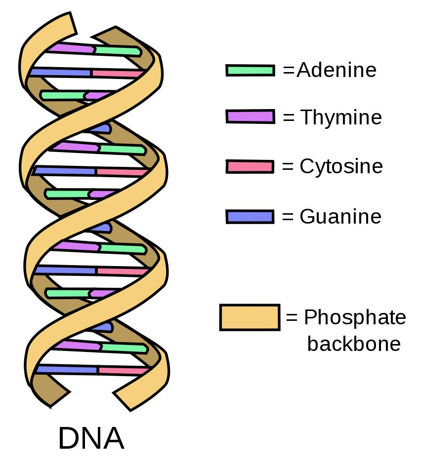
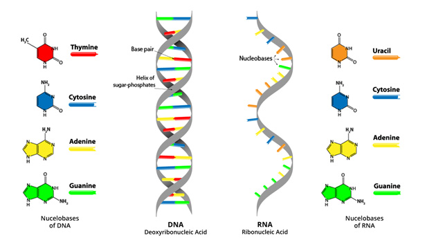
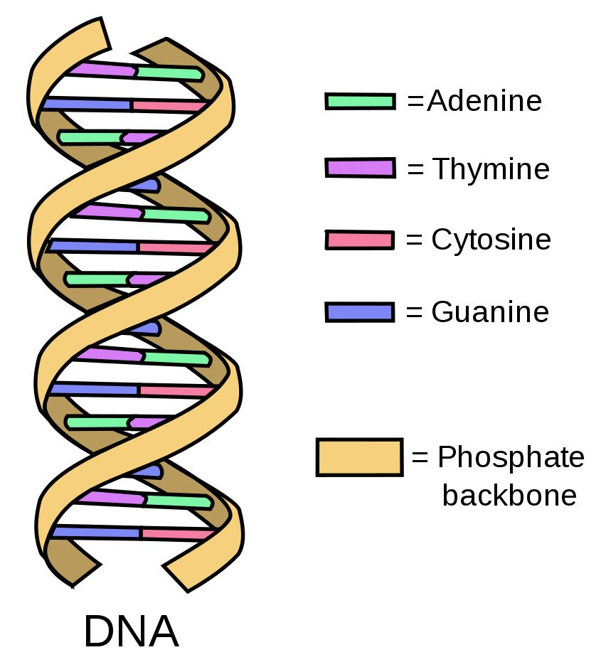
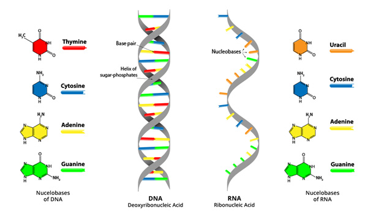

What is a Gene?
A gene is a sequence of coding in your DNA which encodes a gene product. They consist of building blocks called nucleotides: A, C, G, and T. These are the Sequences of life and make up who you are!
 A gene is a sequence of coding in your DNA which encodes a gene product. They consist of building blocks called nucleotides: A, C, G, and T. These are the Sequences of life and make up who you are!
 